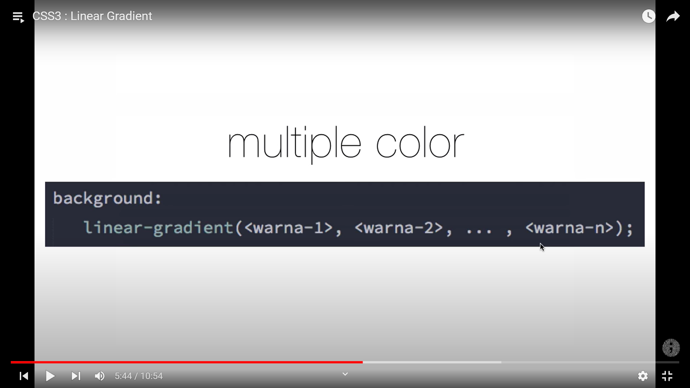
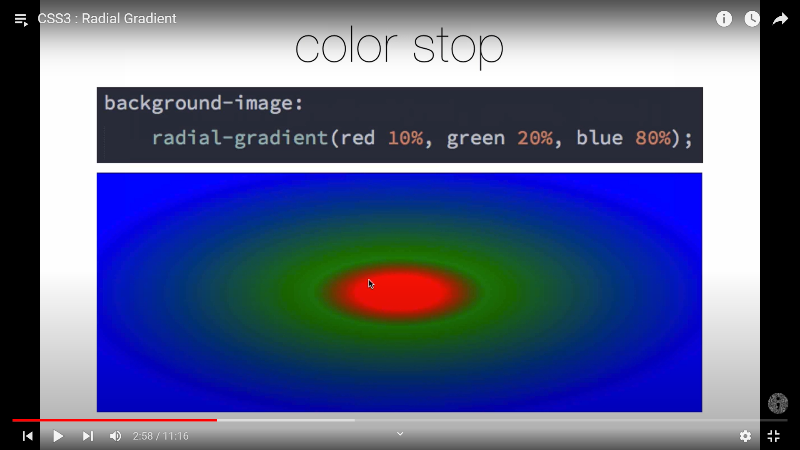

memberikan gradasi warna secara melingkar
untuk properti dan sintaks dan lain2 sama seperti linear gradient
 Sintaks lengkap radial-gradient
untuk properti
{tipe} = ellipse dan circle(lingkaran sempurna)
jangkauan(jarak dari pusat gradient ke sisi terluar-nya) : (closest-corner,closest-side,farthest-corner,farthest-side)
posisi(memindahkan titik pusat gradient): [ posisi-y(top,center,bottom),
posisi-x(left,center,right) ]